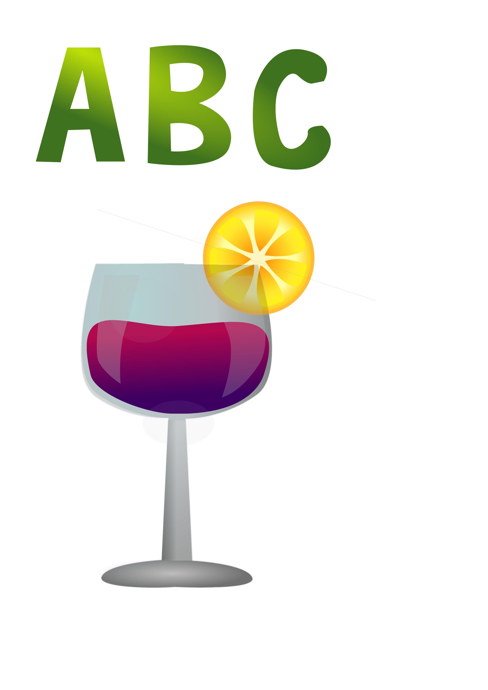

Pomoću programa Fontforge napravila sam svoj valstiti font baizan na svom vlastitom rukopisu. Ipod je prikaz izlgleda mog fonta u obliku slike s mojim imenom.
idući nam je zadatak bio iskoristiti naš font i ukrasiti ga Bezierovim krivuljama. Program koji sam koristila za ovu vježbu je bio Inkscape.
U ovoj smo vježbi imali priliku naučiti nove alate programa te se upoznali pojmove poput swatch boji, layers, grupiranje i mnoge druge.
Ovom vježbom smo dodatno nadogradili naše znanje uvodeći razne vrste gradijenata: linearni, radijalni i mesh.

Projektni zadatak od nas je zatražio da sve novostvoreno znanje o vektorskoj grafici te izradimo rad na temu morsko dno.
Vježbom pet prelazimo na piksel grafiku. Za prvi zadatak smo dobili dvije slike koje su imali razna oštećenja, linije te su imale pojedine dijelove koje smo trebali nadodoati ili maknuti. U svim vježbama vezanim za piksel grafiku koristila sam program Gimp. U vježbi sam koristila iduće alate: lasso tool,clone i heal. Naposlijetku sam dodatno uljepšala slike pomoću burn/dodge, levels i brightness.
Početna fotografija koju smo dobili bila je crno bijela. Kako i naslov vježbe sam sugerira zadtak nam je bio dodati joj boju.


Fotomontažom smo naučili kombinirati pojedine dijelove slike u jednu cijelinu pomoću selektiranja odabranih objekata pomoću raznih alata. Usput smo i naučili kako dodati sjenu objektima te kako urediti objekte da izgledaju kao dio cjeline.
Kao i u prethodonom projektnom zadtaku ovdje smo trebali pokazati svoje stećeno znanje, no ovoga puta u piksel grafici. Pomoću svojih slika i slika koje su nam bile zadane sa strane profesora, napravila sam svoju vlastiti rad.

Iduće sam naučila kako koristiti novi program- Shotcut. Prvo sam naučila kako raditi kinemagraf, prvo po zadanom uzoru svijeće te svoj primjer vjetrenjače.


Cilj ove vježbe bio je naučiti nas kako napraviti edit videa. Naučili smo kako srezati video, dodati i oduzeti zvuk, dodavanje efekata i teskta.